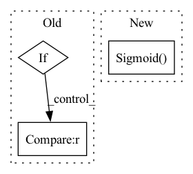

Pattern ID :17969
Before Change
)
for m in self.modules():
if isinstance(m, nn.Conv2d):
nn.init.kaiming_normal_(m.weight, mode="fan_out", nonlinearity="leaky_relu")
m.weight.data *= 0.1
if m.bias is not None :
nn.init.constant_(m.bias, 0)
elif isinstance(m, nn.Linear):
nn.init.kaiming_normal_(m.weight)After Change
nn.Linear(512 * 14 * 14, 1024),
nn.LeakyReLU(negative_slope=0.2, inplace=True),
nn.Linear(1024, 1),
nn.Sigmoid()
)
def forward(self, input: Tensor) -> Tensor:
out = self.features(input)In pattern: SUPERPATTERN
Frequency: 3
Non-data size: 3
Instances Fragment ID: 58874706
Project Name: lornatang/srgan-pytorch
Commit Name: 5cf838428d2fd83fd2fc39b794fdd8fb82ea91ed
Time: 2020-10-21
Author: liuchangyu1111@gmail.com
File Name: srgan_pytorch/model.py
M Class Name: Discriminator
N Class Name: Discriminator
M Method Name: __init__(1)
N Method Name: __init__(1)
M Parent Class: nn.Module
N Parent Class: nn.Module
M File Name: srgan_pytorch/model.py
N File Name: srgan_pytorch/model.py
M Start Line: 63
M End Line: 85
N Start Line: 63
N End Line: 69
Before Change
)
for m in self.modules():
if isinstance(m, nn.Conv2d):
nn.init.kaiming_normal_(m.weight, mode="fan_out", nonlinearity="leaky_relu")
if m.bias is not None :
nn.init.constant_(m.bias, 0)
elif isinstance(m, nn.BatchNorm2d):
nn.init.constant_(m.weight, 1)After Change
nn.Linear(512 * 14 * 14, 1024),
nn.LeakyReLU(negative_slope=0.2, inplace=True),
nn.Linear(1024, 1),
nn.Sigmoid()
)
def forward(self, input: Tensor) -> Tensor:
out = self.features(input) Fragment ID: 58874704
Project Name: lornatang/esrgan-pytorch
Commit Name: 91405c6093508419a44d6313646c88ec681a90d2
Time: 2020-10-21
Author: liuchangyu1111@gmail.com
File Name: esrgan_pytorch/model.py
M Class Name: Discriminator
N Class Name: Discriminator
M Method Name: __init__(1)
N Method Name: __init__(1)
M Parent Class: nn.Module
N Parent Class: nn.Module
M File Name: esrgan_pytorch/model.py
N File Name: esrgan_pytorch/model.py
M Start Line: 63
M End Line: 83
N Start Line: 63
N End Line: 69
Before Change
raise TypeError("Unknown Type:\t{}".format(norm))
self.norm0 = norm(out_channels)
if self.concat:
if self.mode == "res_mask" :
k= 2*out_channels + 1
else:
k = 2*out_channelsAfter Change
nn.Conv2d(out_channels // 2 + 1, out_channels // 4, 5, 1, 2),
nn.ReLU(True),
nn.Conv2d(out_channels // 4, 1, 5, 1, 2),
nn.Sigmoid()
])
)
self.conv3.append(conv3x3(out_channels // 2, out_channels))
Fragment ID: 58874708
Project Name: bcmi/slbr-visible-watermark-removal
Commit Name: 43e84b70895d28955496122816e50857863e5bfd
Time: 2022-01-04
Author: lj200820082007@163.com
File Name: src/networks/blocks.py
M Class Name: MBEBlock
N Class Name: MBEBlock
M Method Name: __init__(10)
N Method Name: __init__(10)
M Parent Class: nn.Module
N Parent Class: nn.Module
M File Name: src/networks/blocks.py
N File Name: src/networks/blocks.py
M Start Line: 208
M End Line: 235
N Start Line: 208
N End Line: 248